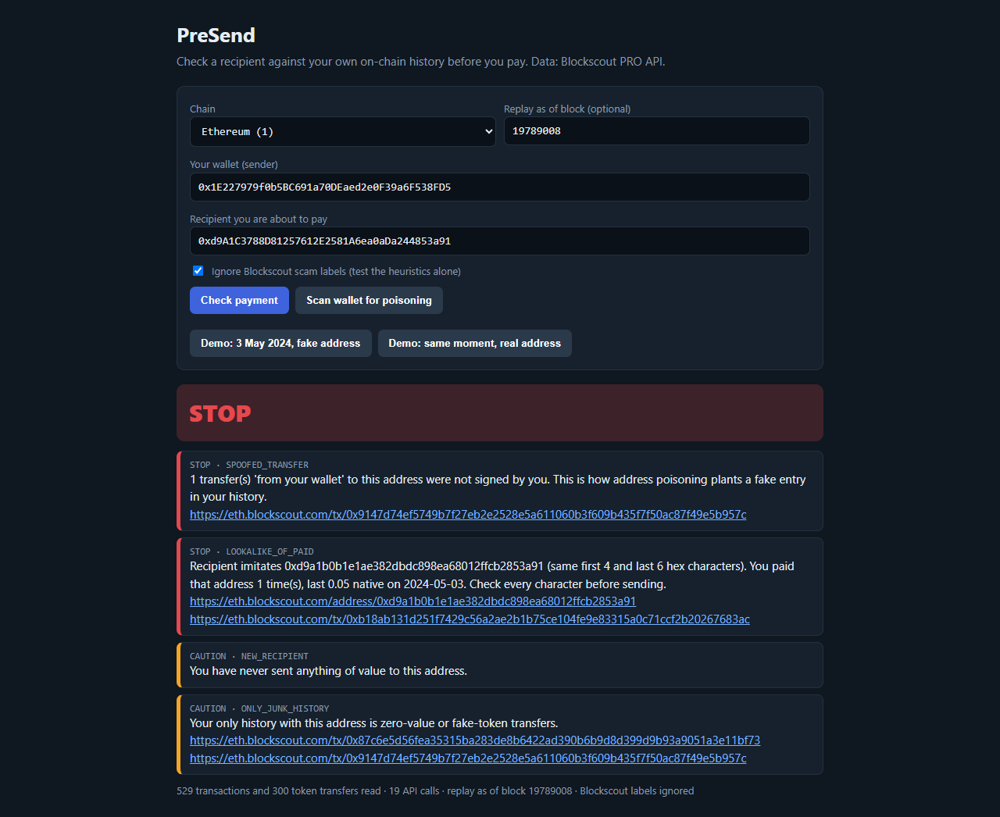
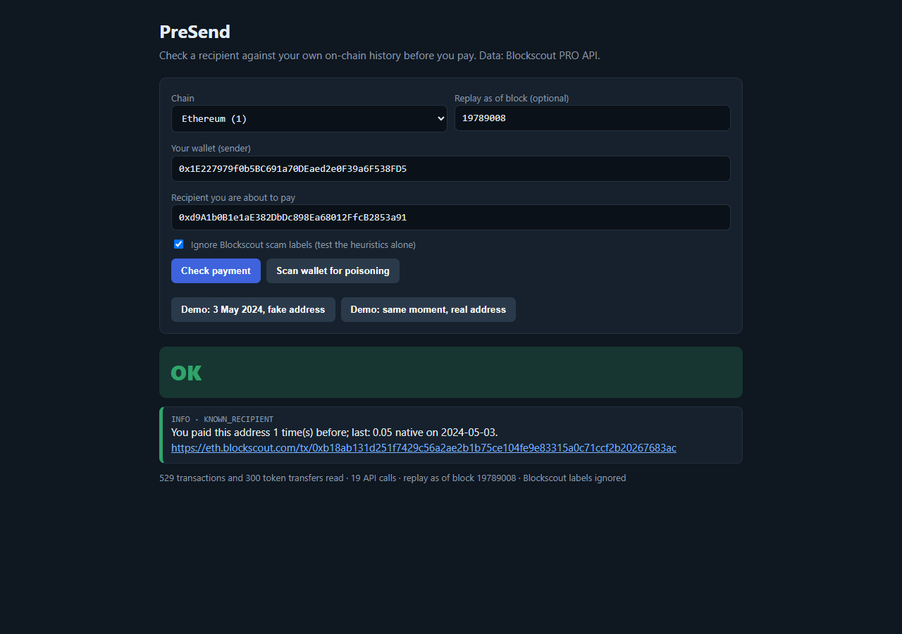
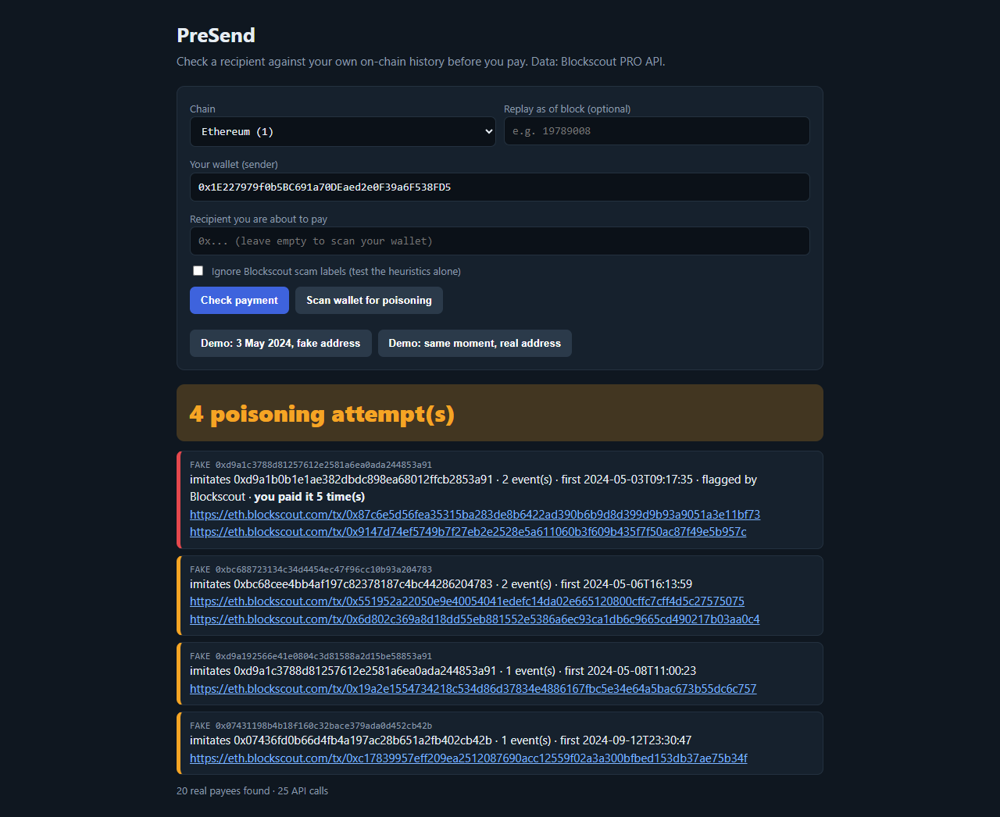
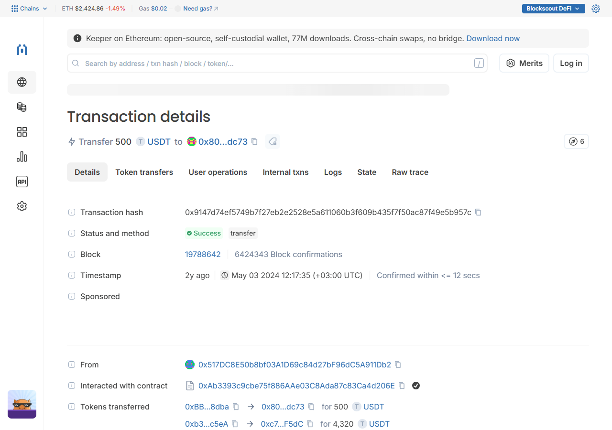
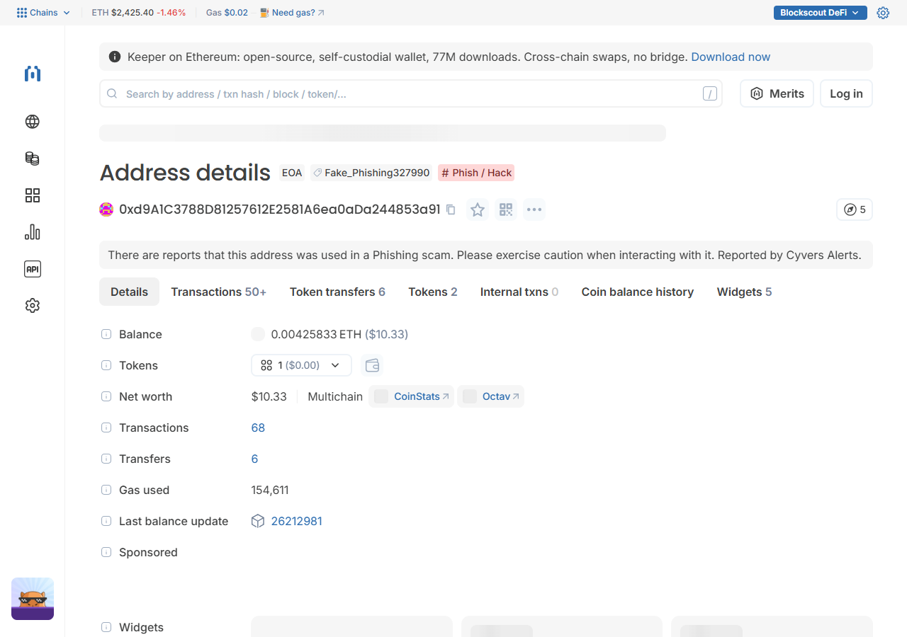

PreSend
Check a recipient against your own on-chain history before you pay. Stops address-poisoning look-alikes, spoofed "from you" transfers and fake tokens. Data: Blockscout PRO API. CLI, local web page and MCP tool for AI agents.
Prototype for the Blockscout PRO API Buildathon. Source and setup: github.com/ttimesai-star/presend
Demo (3 min 27 s, synthetic voice)
Screens




